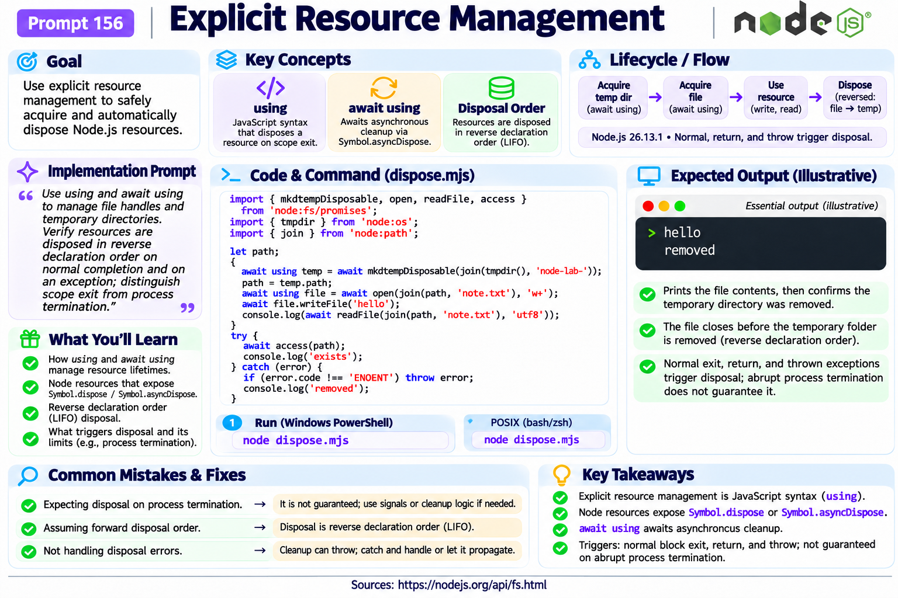
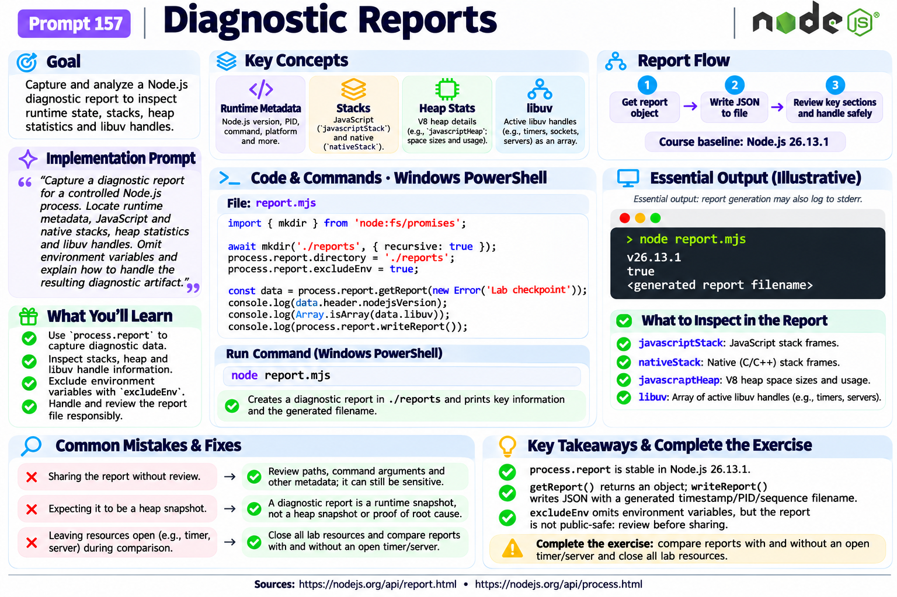
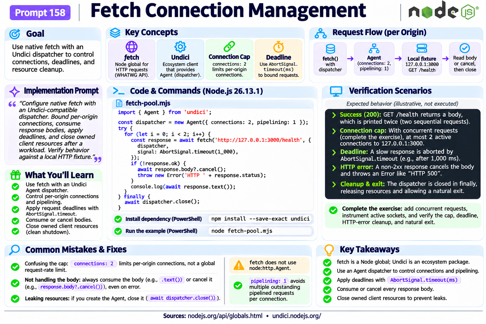
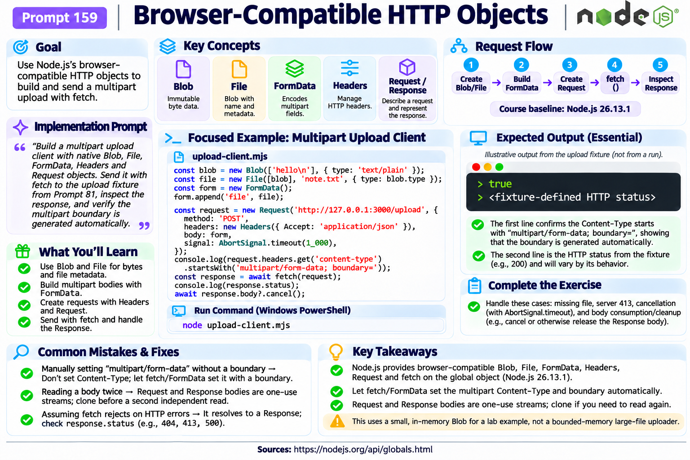
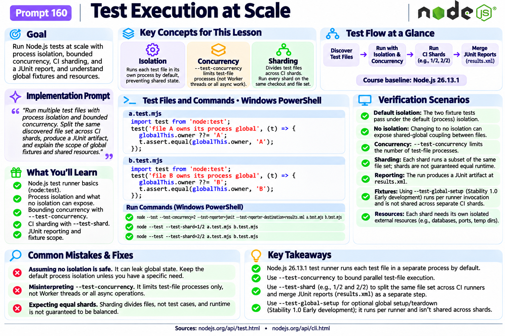
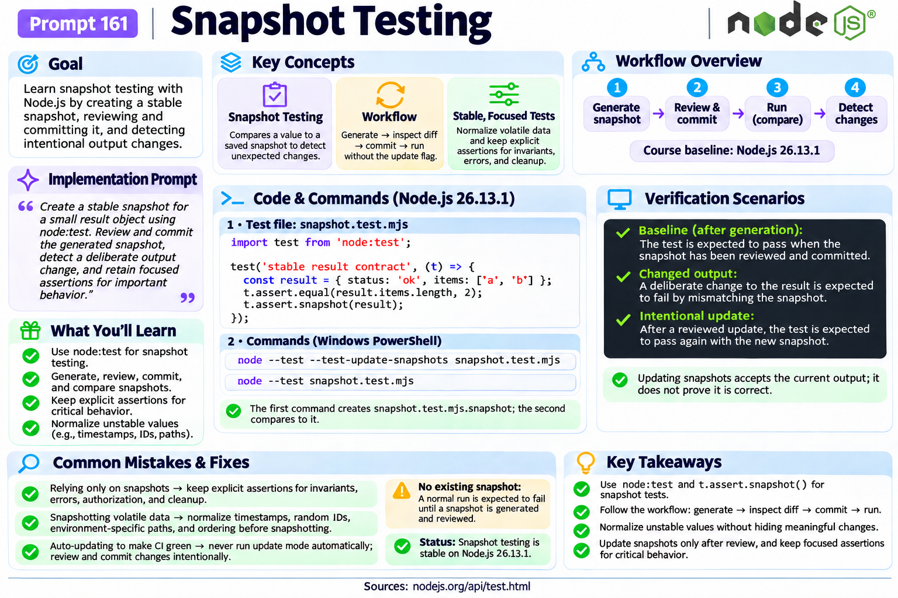
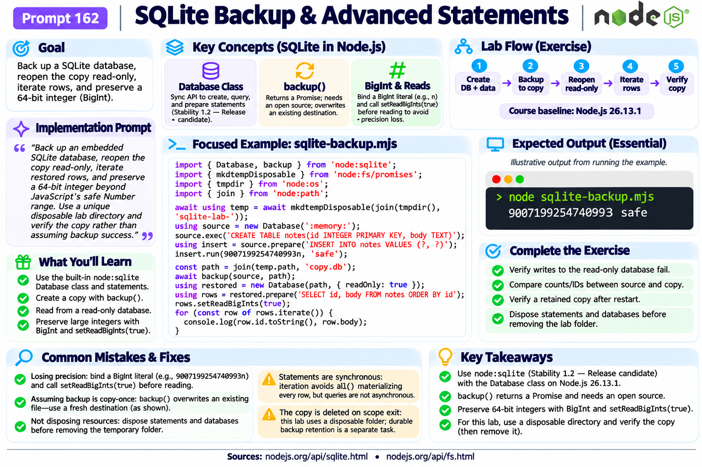
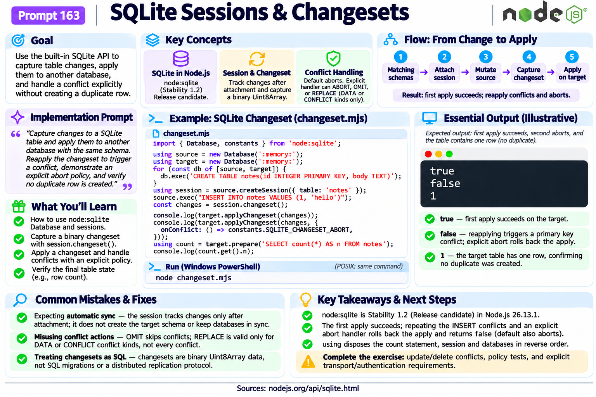
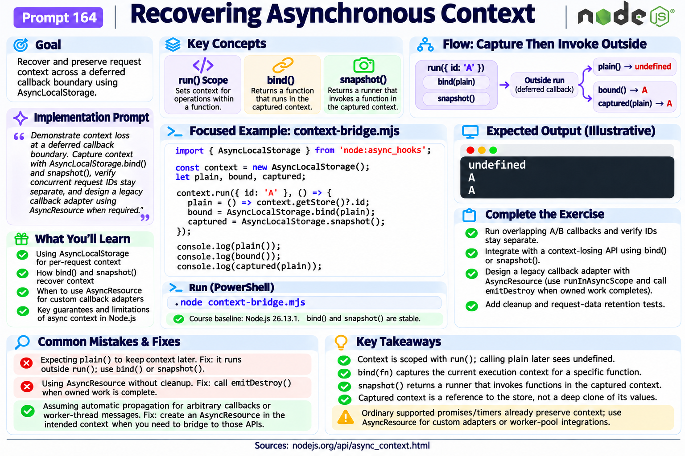
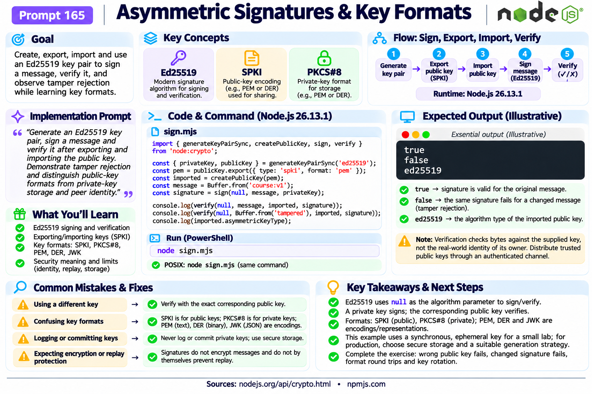
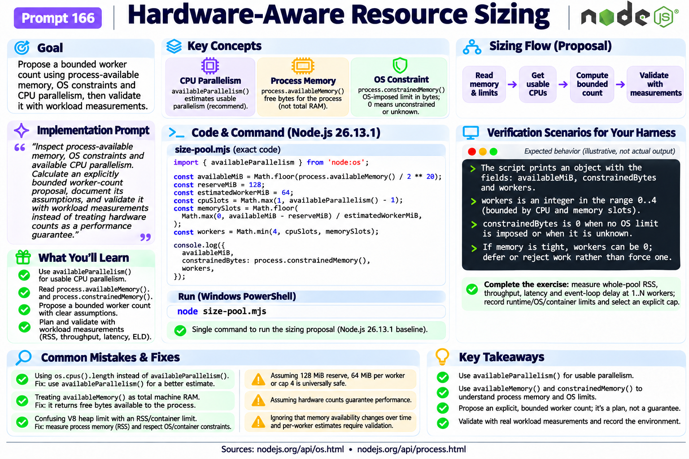
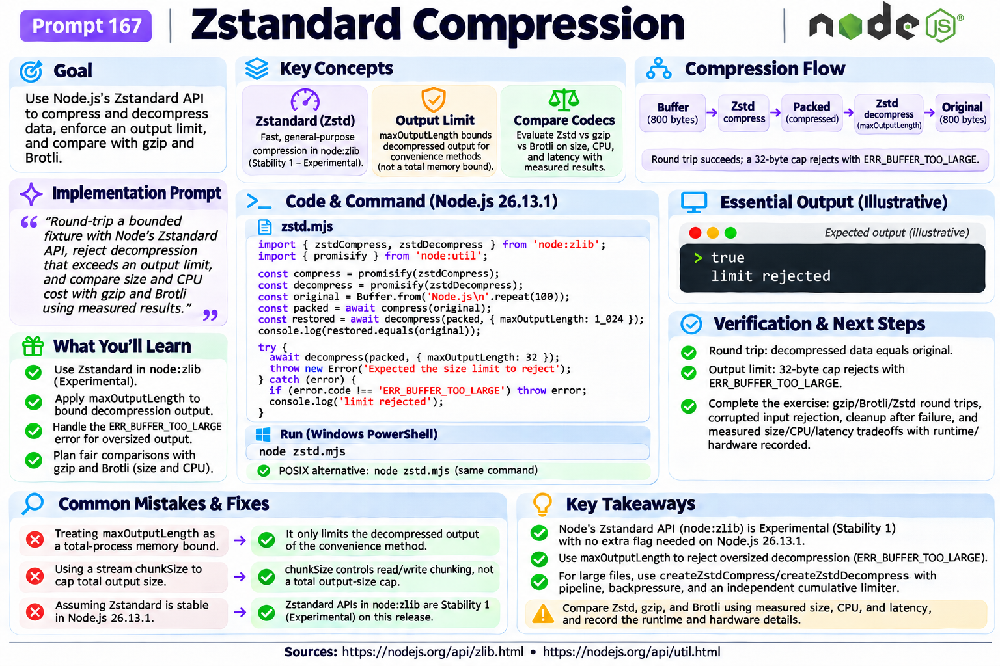
12 new lessons matching the existing series. Click any image for its full-size PNG. Course baseline: Node.js 26.13.1; APIs reviewed against official documentation. Syntax and selected execution checks used locally available Node.js 24.21.0; see the validation notes for exact scope. Images label output as illustrative.
Read all lesson briefs · Validation notes · Structured briefs











